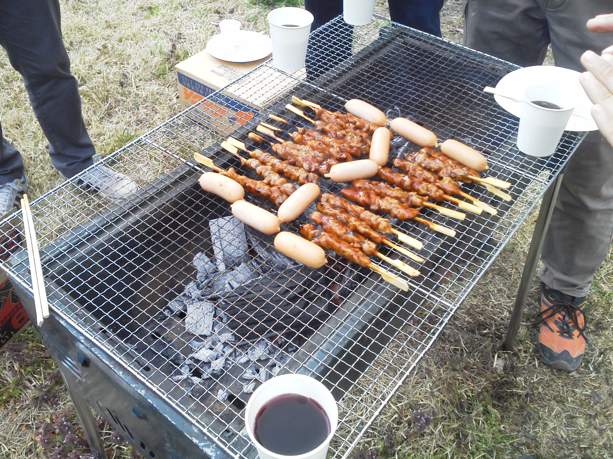

SCIENCE CLUB
新入生歓迎会を行いました！

新しく科学部に入部した新入生のために、4月19日に新入生歓迎会を行いました！
桜が満開のなか、バーベキューをおこないました。
午前中は暖かく、とてもバーベキュー日和でしたが午後は雷が鳴り風が吹いている中での、
まるで去年の科学部を表しているかのような天気でした。
ですが、火のつかない一部を除いてみなさんバーベキューを楽しんでいたようでした！
はやく一年生も科学部なじんでロボコン期間中は一緒に全国目指せることを期待します！